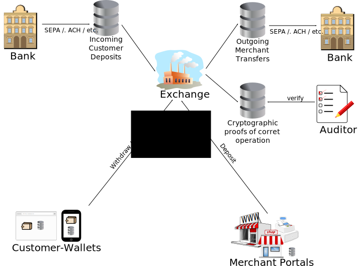

Taler is an electronic payment system that was built with the goal of supporting taxation. With Taler, the receiver of any form of payment is known, and the payment information comes attached with some details about what the payment was made for (but not the identity of the customer). Thus, governments can use this data to tax buisnesses and individuals based on their income, making tax evasion and black markets less viable.
Taler ist ein elektronisches Zahlungssystem, welches die Besteuerung einzelner Transaktionen ermöglicht. Im System sind die Empfänger für jeden Zahlungsvorgang bekannt, genauso wie bestimmte Details über den Zweck der Transaktion (aber nicht die Identität des Kunden). Dadurch ermöglicht Taler es Regierungen, sowohl Firmen als auch Privatpersonen auf Basis ihres Einkommens zu besteuern und erschwert gleichzeitig noch Steuervermeidungen sowie den Schwarzmarkthandel.
Taler est un système de paiement électronique qui a été créé dans le but d'aide à la taxation. Avec Taler, le créditeur de toute forme de paiement est connu, et les informations du paiement arrivent avec les détails concernant le motif du paiement. Donc, les gouvernements peuvent utiliser cette donnée pour taxer les entreprises et les particuliers en se basant sur leurs revenus, permettant ainsi de diminuer l'évasion fiscale et le marché noir.
Taler è un sistema di pagamento elettronico ideato con lo scopo di supportare la tassazione. Con Taler, il ricevitore di qualsiasi forma di pagamento è conosciuto, e le informazioni del pagamento arrivano con l'aggiunta di dettagli riguardo al perché sia stato effettuato. Quindi i governi possono usare questi dati per tazzare aziende e individui in base al loro reddito, così da rendere evasione fiscale e mercato nero meno usufruibili.
Taler es un sistema de pago electrónico construido con el objetivo de dar soporte impositivo. Con Taler, el receptor de cualquier forma de pago es conocido, y la información del pago viene adjunta con algunos detalles respecto a cómo fue hecho el pago (pero sin la identidad del cliente). De este modo, los gobiernos pueden usar estos datos para cobrar impuestos a empresas e individuos en base a sus ingresos, haciendo que la evasión impositiva y los mercados negros sean menos viables.
Taler's payments are cryptographically secured. Thus, customers, merchants and the exchange can mathematically demonstrate their lawful behavior in court in case of disputes. Financial damages are strictly limited, improving economic security for individuals, merchants, the exchange and the state. Most importantly, an independent auditor can ensure that there is no "bad exchange" within the Taler system who might threaten the economy due to fraud.
Talers Zahlvorgänge sind kryptographisch gesichert. Dieser Umstand ermöglicht es Kunden, Händlern und der Wecheslstube, wenn nötig ihre Gesetzmäßigkeit in einem Gerichtsprozess mathematisch nachzuweisen. Finanzielle Schäden sind streng begrenzt, was der ökonomischen Sicherheit von Privatpersonen, Händlern und der Wechselstube entgegen kommt. Herauszuheben ist auch die Tatsache, dass ein unabhängiger Rechnungsprüfer in der Lage ist, die Existenz einer veruntreuenden Bank innerhalb des Taler-Systems auszuschließen.
Les paiements Taler sont sécurisés cryptographiquement. Ainsi, les clients, les commerçants et les fabricants de monnaies peuvent mathématiquement prouver la légalité de leurs activités en cas de litiges. Les dommages financiers sont strictement limités, améliorant la sécurité économique pour les particuliers, les commerçants, la monnaie et l'état. Plus important, un auditeur indépendant peut s'assurer qu'il n'y a pas de "fausse monnaie" à l'intérieur du système Taler qui pourrait menacer l'économie en raison de fraude.
I pagamenti fatti con Taler sono crittograficamente sicuri. In questo modo, clienti, venditori e il conio possono matematicamente dimostrare il loro comportamento legittimo in un processo, in caso di controversie. I danni finanziari sono molto limitati attraverso l'incremento di sicurezza economica per l'individuo, il venditore, il conio e lo stato. Ancora più importante è il fatto che un qualsiasi revisore di conti indipendente possa assicurare che non ci sia un "conio cattivo" all'interno del sistema di Taler che potrebbe minacciare l'economia attraverso frodi fiscali.
Los pagos Taler están asegurados criptográficamente. Así, los clientes, comerciantes y la casa de cambio pueden demostrar matemáticamente su comportamiento legal en la Justicia en caso de disputas. Los daños financieros están estrictamente limitados, mejorando la seguridad económica para individuos, comerciantes, la casa de cambio y el Estado. Lo más importante, un auditor independiente puede asegurar que no hay "mala casa de cambio" dentro del sistema Taler, que pueda amenazar la economía debido al fraude.
Taler is free software implementing an open protocol standard. Thus, Taler will enable competition and avoid the monopolization of payment systems that threatens global political and financial stability today.
Taler ist freie Software, welche einen offenen Protokollstandard implementiert. Taler ermöglicht daher einen offenen Wettbewerb und vermeidet das Problem der Monopolisierung von Zahlungssystemen, welche heute in globalem Ausmaß die politische sowie aber auch die finanzielle Stabilität bedroht.
Taler est un logiciel libre exécutant un protocol standard ouvert. Ainsi, Taler permettra la concurrence et interdira le monopole de système de paiement qui menace la stabilité politique et financière globale actuellement.
Taler è un free software che implementa standard di protocollo aperto. Quindi Taler abiliterà la competizione ed eviterà la monopolizzazione dei sistemi di pagamento che oggigiorno minacciano la politica globale e la stabilità finanziaria.
Taler es software libre implementando un protocolo abierto estándar. Así, Taler habilitará la competencia y evitará la monopolización de los sistemas de pago que amenaza la estabilidad política y financiera global hoy día.
Taler is designed to be efficient. Unlike timeline-based payment systems like BitCoin, Taler will not threaten the availability of national electric grids or (significantly) contribute to environmental pollution.
Taler wurde im Gedanken der Effizienz erschaffen. Anders als Zeitachsen-basierte Bezahlsysteme wie BitCoin bedroht Taler nicht die Verfügbarkeit nationaler Energieversorgungsnetze und wird auch nicht (signifikant) zur Umweltverschmutzung beitragen.
Taler est conçu pour être efficace. Contrairement à des systèmes de paiement chronologiques comme BitCoin, Taler ne menacera pas la disponibilité des réseaux électriques nationaux ou (de manière siginifcative) ne participera pas à la pollution environnementale.
Taler è progettato per essere efficiente. A differenza dei sistemi di pagamento come BitCoin, Taler non minaccerà la disponibilità della rete elettrica nazionale o contribuirà ad incrementare (in modo significativo) l'inquinamento.
Taler se diseñó para ser eficiente. A diferencia de los sistemas de pago basados en una línea de tiempo como BitCoin, Taler no amenaza la disponibilidad de las redes eléctricas nacionales ni contribuye (significativamente) a la contaminación ambiental.
Governments can observe traditional wire transfers entering and leaving the Taler system, and require merchants and exchange operators to provide certain information during financial audits. Exchange operators are expected to be permanently checked by auditors, while merchants may be required to reveal information during regular tax audits. Information available to the government includes:
Regierungen sehen die Banküberweisungen von und an die Wechselstube und können von Händlern und Wechselstubenbetreibern weitere Informationen bei Betriebsprüfungen verlangen. Wechselstubenbetreiber werden dauernd überprüft, wohingegen Händler im Wesentlichen bei der Steuerprüfung weitere Informationen bereistellen. Informationen die der Regierung bereitgestellt werden können sind:
Les gouvernements peuvent observer les transfères traditionels entrant et sortant du system Taler, et requierent des marchantes et des opérateurs du bureau de change qu'ils fournissent certaines informations lors d'audits financiers. Les opérateur du bureau de change doivent être constamment surveillé par les auditeurs, tandis que l'on peut demander aux marchants de révéler des informations suplémentaires lors des vérification fiscales. Les informations disponibles aux gouvernements incluent :
Organi quali gli Stati potranno osservare i trasferimenti bancari in ingresso e in uscita dal sistema Taler, e richiedere ai venditori e alla zecca le informazioni necessarie nelle ispezioni finanziarie. Gli operatori della zecca dovranno aspettarsi ripetitivi controlli da parte degli ispettori, mentre ai negozianti sarà richiesto di rivelare le informazioni necessarie soltanto durante la riscossione delle tasse. Le informazini disponibili ai governi includono:
Los gobiernos pueden observar las transferencias bancarias tradicionales entrando y saliendo del sistema Taler, y requerir que los comerciantes y operadores de casas de cambio presenten cierta información durante las auditorías financieras. Los operadores de casa de cambio deberían ser continuamente auditados, mientras que se puede requerir a los comerciantes que revelen información durante las auditorías impositivas regulares. La información disponible para el gobierno incluye:
